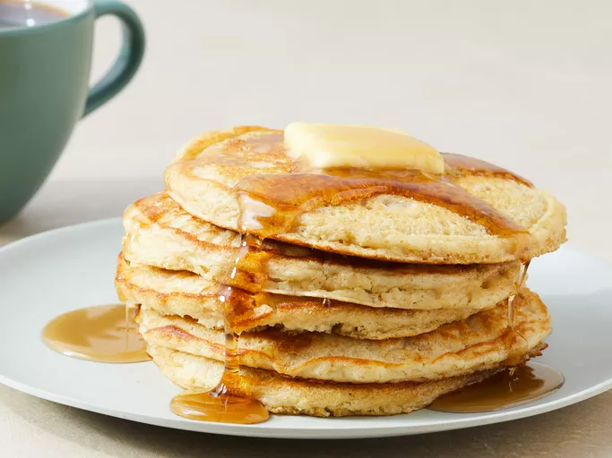

Home
Oatmeal Pancakes

Description
These oatmeal pancakes are a delicious and healthy twist on the classic breakfast favorite.
Ingredients
- 3/4 cup buttermilk
- 1/2 cup all-purpose flour
- 1/2 cup quick cooking oats
- 1 large egg
- 2 tablespoons vegetable oil
- 1 tablespoon white sugar
- 1 teaspoon vanilla extract
- 1 teaspoon baking powder
- 1/2 teaspoon baking soda
- 1/2 teaspoon salt
Directions
- Gather all ingredients.
- Combine buttermilk, flour, oats, egg, oil, sugar, vanilla, baking powder, baking soda, and salt in a blender; purée until smooth.
- Heat a lightly oiled griddle or large skillet over medium-high heat. Pour 1/4 cupfuls batter onto the hot griddle. Cook until bubbles form on the surface, 1 to 2 minutes. Flip and cook until browned on the other side, 1 to 2 minutes more.
- Serve immediately.